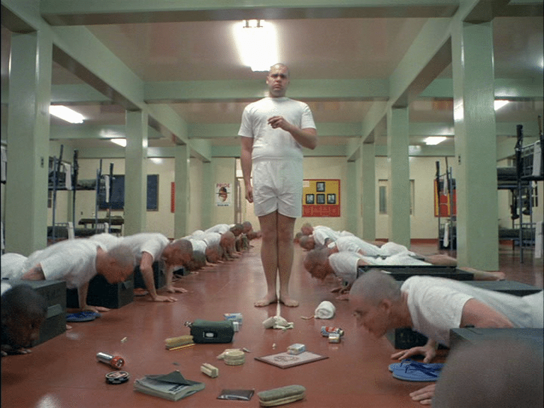

<풀 메탈 자켓>에 나오는 '파일 훈련병'
체력도 부족해서 틈만나면 하트먼 훈련교관한테 까이는 고문관 캐릭터로
결국 정신적으로 망가져 교관을 살해하고 자신도 자살하면서
외국에서는 '징병제의 피해자'라 동정하는 의견이 많은데...

여기서 관물대에 도넛 짱박았다가 교관한테 걸려서 동기들이 얼차려 받는 장면이 있음.
해당 장면 때문에 징병제라 군필이 많은 한국에서는 '파일 이병'을 '폐급'이라 욕한다고 함..... ㅇㅇ
<풀 메탈 자켓>에 나오는 '파일 훈련병'
체력도 부족해서 틈만나면 하트먼 훈련교관한테 까이는 고문관 캐릭터로
결국 정신적으로 망가져 교관을 살해하고 자신도 자살하면서
외국에서는 '징병제의 피해자'라 동정하는 의견이 많은데...

여기서 관물대에 도넛 짱박았다가 교관한테 걸려서 동기들이 얼차려 받는 장면이 있음.
해당 장면 때문에 징병제라 군필이 많은 한국에서는 '파일 이병'을 '폐급'이라 욕한다고 함..... ㅇㅇ
댓글
수집 당시 댓글 32개
고추건조기 · 1 시간 전
일째근무중 · 1 시간 전
나 기훈단때도 군대리아 빵 보관했다가 걸린 애 있었어.
ㅋㅋㅋㅋㅋㅋ
실피움 · 1 시간 전
난 저거보고 저런새끼를 끌고온 놈들은 진짜 십새끼구나 했지
개드립관리자 · 1 시간 전
한국에서 징병제라는 스토리가 안퍼져서 욕먹은거지 뭐
데미소다복숭아 · 1 시간 전
우리는 당해본 사람들이니까
STHSTK · 1 시간 전
징병제의 피해자가 맞긴 한데?
저 사람도, 저 주변 사람도 다 피해자임
sleeder · 1 시간 전
경지도 잡아가는 징병제를 까는 영화가 맞잖아?
isnrnsli91 · 1 시간 전
김팽달 · 1 시간 전
이게 우리나라처럼 적대국이랑 국경을 맞대고 있는거라면 모를까 남의 전쟁에서 피똥이나 싸겠다고 군대 오면 안되는 사람까지 긁어모아서 베트남에 던져버린 결과지 뭐
ers133 · 1 시간 전
떨어져서보면 안타깝지만
가까이서 보면 짜증나는데
한국남자 99퍼센트는 군생활중 저런 짓 하던 중대 소대 내 폐급 누군가가 머리속에 떠오를테니 욕도 나오는거지ㅋㅋ
우구스 · 1 시간 전
왓 이즈 댓?? 왔더 뻨 이즈 댓???!!
· 민초단열성단원 · 38 분 전
젤리 도넛~~
스마게이트 · 1 시간 전
킹핀을 건드리지 말았어야지
극과극은통한다 · 1 시간 전
하트먼이 진짜 폐급임
총알 실셈 잘못해서 사고 예방도 못하고 총구 앞에서 가오잡다가 뒤졌는데
존나 무능한 놈이 인상 쓰고 욕하니까 일잘하는 것처럼 보일뿐
· 15공수특전여단 · 51 분 전
di가 좆으로 보이나..
· 극과극은통한다 · 48 분 전
총알 실셈 잘못해서 훈련병이 총알 가져가는 거 놓침
연대책임으로 병영 내 따돌림 유도해서 사고발생
좆 맞는데 왜 자꾸 이상한 소리하는 애들이 달라붙노 미필임?
· 15공수특전여단 · 46 분 전
병출신 한계 ㅉㅉ 가던길가라
· 틀니딱딱사이트 · 41 분 전
부사관 대다수가 좆꼴통인데 뭔씹 ㅋㅋㅋ
· 옛계정은어디갔나몰라 · 방금 전
부사관 출신 긁혔네
제로제로 · 1 시간 전
한국의 병무청장: 한국남자면 정신병 이력이 있어도 현역! 고아도 현역! 탈북민도 현역! 귀화자도 현역! 저런 사고 터지면 부대 잘못!
논리왕전기 · 1 시간 전
폐급은 맞아.
근데 부조리가 심한것도 맞지
RCkitten · 1 시간 전
One! Two! Three! Four! I! Love! Marine! Corp!
FBI · 1 시간 전
관심사병
왜용 · 1 시간 전
하지 말란거 했으면 폐급이긴 한데 저기사람들이 너무 몰아붙이기도 했어
MrBlueSky · 1 시간 전
훈련병들이 군대리아빵이나 맛스타 관물함에 숨키는건 유구한 전통. 걸리느냐. 안 걸리느냐 차이
지나가는김개붕 · 1 시간 전
저 영화 나오던 시절에 한국에서는 일어나도 쉬쉬함
Rectify · 1 시간 전
체력폐급 실실쪼개는 면상이라 교관한테 찍혔음
그것때문에 동기들도 같이 얼차려 받다가 빡쳐서 어느날 자고있는 폐급한테 동기들이 비누넣은 양말로 두들겨팸
그뒤로 슈퍼에이스됨
근데 총에 이름 붙이고 총이랑 대화 나누면서 맛탱이간거임
잭다니엘 · 1 시간 전
폐급 맞지
으으으으으으그 · 1 시간 전
인간 본능인걸까 저장하는건
작성자존슨 · 1 시간 전
폐급 새끼 맞죠..
IUJOA · 1 시간 전
나도 처음엔 개씹폐급 새끼라고 욕했는데
나이먹고 보니까 그냥 불쌍하기만 하더라
정신적으로 덜떨어진 애가 억지로 끌려와서 매일 폭언에 구타에..
15공수특전여단 · 48 분 전
PT PT good for you good for me~